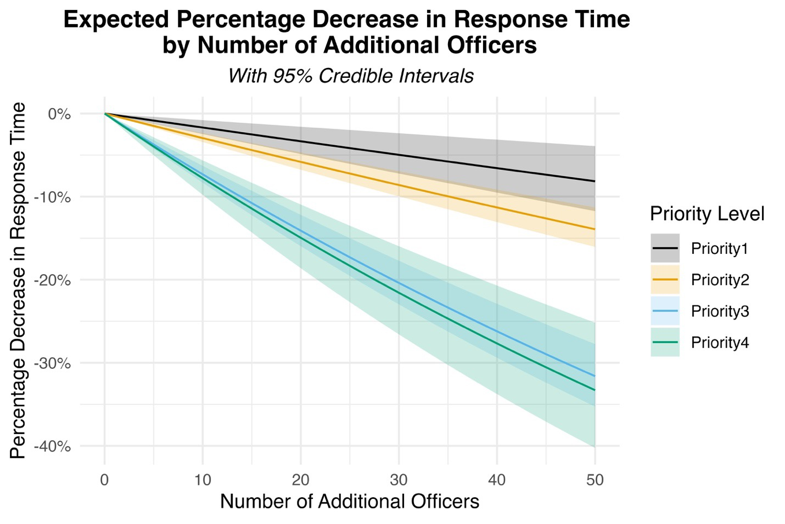

Authors:
Publication Policing: A Journal of Policy and Practice
Post-Print CrimRxiv
Response times in policing have long been a focal point of discussion among professionals and city administrators, serving as a crucial metric for evaluating a police department’s efficiency and effectiveness. The significance of these response times has been a subject of contention within academic circles. Some researchers argue that the window for an effective police response is so narrow that it often eludes the capabilities of most departments,1 while others contend that delays in crime reporting render the speed of response irrelevant.2
However, a shift in perspective is emerging as recent studies begin to highlight the tangible impact of swift police action. Some evidence now suggests that rapid response can significantly influence crucial outcomes, such as arrest rates3,4,5 and survival chances in severe incidents.6,7 Notably, the impact appears to be particularly pronounced among female victims, suggesting that swift response could play a role in gender-specific vulnerabilities.8
An often-overlooked aspect of this debate is the societal expectation that a call to emergency services, such as 911, will be met with a prompt and efficient response. This public anticipation goes beyond the academic discourse on the tangible outcomes of quick responses, such as arrests or case resolutions. The fundamental expectation from the community is that their calls for assistance will be answered in a timely manner, a demand that seems entirely reasonable and justified.
The balancing act of maintaining adequate patrol staffing is a well-known challenge in urban police settings. Officers often report feeling overstretched, attributing this to an imbalance in resource allocation. Conversely, police administrators face pressure from community and political entities demanding faster response times, adding another layer of complexity to the issue. The challenge of meeting these expectations has been exacerbated by ongoing issues within many police departments, including difficulties with recruitment and high turnover rates.9,10 These challenges raise pertinent questions about the impact of staffing levels on response times. Our study seeks to shed light on this issue by exploring how staffing, call volumes, and proactive policing efforts collectively influence the speed of police responses.
In 2020 at the studied agency, a notable shift occurred, with a significant increase in median response times, particularly for lower-priority calls, amid widespread demonstrations and civil unrest. This period, marked by a contentious officer-involved shooting, precipitated a staffing crisis as a significant portion of the workforce exited through resignations and retirements. The department was compelled to reallocate personnel from specialized units to patrol duties to maintain operational capacity.
Our analysis draws on seven years of data from the agency in question, encompassing over 2,500 daily records that detail patrol staffing hours, calls for service (CFS), and proactive policing activities. This dataset provides a detailed snapshot of the department’s operational dynamics, allowing us to examine the interplay between daily CFS volumes, proactive tasks, and their potential impact on response times. The analysis also incorporates variables to account for the extraordinary challenges posed by the COVID-19 pandemic and the social unrest following George Floyd’s murder.
We used Bayesian Holt-Winters state-space models to analyze the data, a sophisticated approach that enhances traditional forecasting methods by accounting for trends and seasonality. This model allowed us to dissect the data across different priority levels of CFS, integrating daily staffing levels, CFS counts, and proactive policing efforts as key variables. The inclusion of variables for significant periods like the COVID pandemic and the aftermath of George Floyd’s murder enabled us to isolate and understand the effects of these exceptional circumstances on response patterns.
Our findings highlight staffing levels as a consistently significant factor affecting response times across all priority levels. Although the controls for the COVID and Floyd periods had anticipated effects (decreased response times and increased response times, respectively), it was the staffing variable that stood out as the most influential, overshadowing the impacts of call volume and proactive policing efforts.
When we translated the staffing coefficients into the percentage decrease in response times per additional officer, a pattern of diminishing returns emerged, particularly for high-priority calls. Adding officers does lead to faster responses, but the effect lessens for the most urgent calls, indicating a prioritization ceiling. In contrast, lower-priority calls, which can afford some delay, see more substantial improvements in response times with increased staffing. The figure below demonstrates our finding that improvements in response times for higher-priority (i.e. more serious) CFS having a lower elasticity response to increases in staffing levels.

The implications of our findings advocate for strategic investments in police staffing and challenging narratives around defunding. Additionally, the study emphasizes the need for careful consideration of officer welfare, cautioning against the excessive use of overtime, which can negatively affect both individual officers and the overall quality of policing. The practice observed in some departments of deprioritizing lower-tier calls might offer temporary respite but risks undermining community policing efforts and eroding trust in law enforcement, especially in underserved areas.
Public and scholarly debates will continue with regard to how many officers a city needs and what we should do with those officers. But when a city’s residents call 911, the general social expectation is that the state will respond by sending someone (often a police officer) to solve their problem, at least in the short-term, life-preserving meaning of that word. Absent the state’s ability to send help, a basic social contract norm is violated. In sum, this study fills a critical gap in the extant literature by offering a nuanced analysis of the impact of staffing on police response times.
Bayley, D. H. (1996). Police for the Future. New York: Oxford University Press.↩︎
Sherman, L. W. (2013). ‘The Rise of Evidence-Based Policing: Targeting, Testing, and Tracking.’ Crime and Justice 42: 377–451. doi: 10.1086/670819↩︎
Cihan, A., Zhang, Y., and Hoover, L. (2012). ‘Police Response Time to In-Progress Burglary: A Multilevel Analysis.’ Police Quarterly 15(3): 308–327. doi: 10.1177/1098611112447753↩︎
Coupe, R. and Blake, L. (2005). ‘The Effects of Patrol Workloads and Response Strength on Arrests at Burglary Emergencies.’ Journal of Criminal Justice 33(3): 239–255. doi: 10.1016/j.jcrimjus.2005.02.004↩︎
Rief, R. and Huff, J. (2023). ‘Revisiting the Influence of Police Response Time: Examining the Effects of Response Time on Arrest and How It Varies By Call Type.’ Journal of Criminal Justice 84: 102025. doi: 10.1016/j.jcrimjus.2022.102025↩︎
Blanes i Vidal, J. and Kirchmaier, T. (2018). ‘The Effect of Police Response Time on Crime Clearance Rates.’ The Review of Economic Studies 85(2): 855–891. doi: 10.1093/restud/rdx044↩︎
Liu, C. (2022). ‘Exploration of the Police Response Time to Motor-Vehicle Crashes in Pennsylvania, USA.’ Journal of Safety Research 80: 243–253. doi: 10.1016/j.jsr.2021.12.006↩︎
DeAngelo, G., Toger, M., and Weisburd, S. (2023). ‘Police Response Time and Injury Outcomes.’ The Economic Journal 133: uead035. doi: 10.1093/ej/uead035↩︎
Mourtgos, S. M., Adams, I. T., and Nix, J. (2022a). ‘Elevated Police Turnover Following the Summer of George Floyd Protests: A Synthetic Control Study.’ Criminology & Public Policy 21(1): 9–33. doi: 10.1111/1745-9133.12556↩︎
Adams, I. T., Mourtgos, S. M., and Nix, J. (2023). ‘Turnover in Large Us Policing Agencies Following the George Floyd Protests.’ Journal of Criminal Justice 88: 102105. doi: 10.1016/j.jcrimjus.2023.102105↩︎